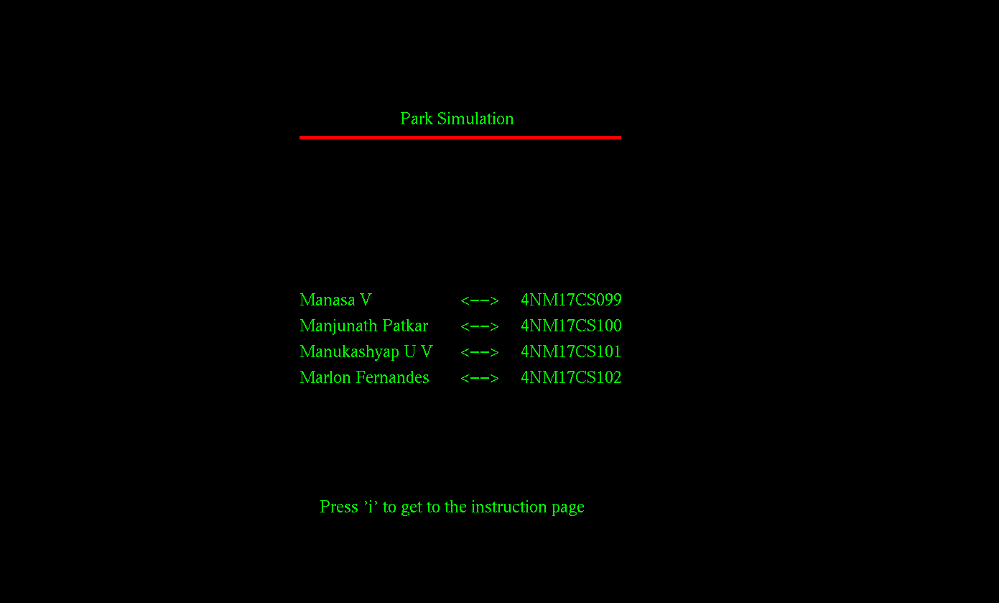

This the the mini project for the class of Computer Graphics of VII semester of NMAMIT.
Project Repository : https://github.com/kashyapmanu/CG-PROJECT
Team Members
| USN | Name |
|---|---|
| 4NM17CS099 | Manasa V |
| 4NM17CS100 | Manjunath Patkar |
| 4NM17CS101 | Manukashyap U V |
| 4NM17CS102 | Marlon Fernandes |
Tech used:
OpenGL
CodeBlocks
Ubuntu
Installing OpenGL on ubuntu and running it through code blocks:
1 - Installing code blocks :
sudo apt install codeblocks
2 - Installing openGL :
sudo apt-get update
sudo apt-get install freeglut3-dev
3 - Change the linker setting in codeblocks : -lGL -lGLU -lglut
Intro Page
Displaying the project name and the collaborators list.
Code:
#include<GL/glut.h>
void init()
{
glClearColor(0.5,0,0.5,0.5);
glMatrixMode(GL_PROJECTION);
glOrtho(0,50,0,50,0,10);
}
void Display_on_screen(char *string)
{
while(*string)
{
glutBitmapCharacter(GLUT_BITMAP_TIMES_ROMAN_24,*string++);
}
}
void display()
{
glClear(GL_COLOR_BUFFER_BIT);
glColor3f(0.0,1.0,0.0);
glRasterPos2i(15,40);
glRasterPos3f(19.5,40,0);
Display_on_screen("Park Simulation");
glRasterPos3f(12,26,0);
Display_on_screen("Manasa V");
glRasterPos3f(21,26,0);
Display_on_screen("<-->");
glRasterPos3f(26,26,0);
Display_on_screen("4NM17CS099");
glRasterPos3f(12,24,0);
Display_on_screen("Manjunath Patkar");
glRasterPos3f(21,24,0);
Display_on_screen("<-->");
glRasterPos3f(26,24,0);
Display_on_screen("4NM17CS100");
glRasterPos3f(12,22,0);
Display_on_screen("Manukashyap U V");
glRasterPos3f(21,22,0);
Display_on_screen("<-->");
glRasterPos3f(26,22,0);
Display_on_screen("4NM17CS101");
glRasterPos3f(12,20,0);
Display_on_screen("Marlon Fernandes");
glRasterPos3f(21,20,0);
Display_on_screen("<-->");
glRasterPos3f(26,20,0);
Display_on_screen("4NM17CS102");
glColor3f(1.0,0.0,0.0);
glLineWidth(5);
glBegin(GL_LINES);
glVertex2i(16,39);
glVertex2i(28,39);
glEnd();
glFlush();
}
int main(int argc, char **argv)
{
glutInit(&argc,argv);
glutInitDisplayMode(GLUT_SINGLE|GLUT_RGB);
glutInitWindowPosition(1,1);
glutInitWindowSize(1400, 950);
glutCreateWindow("PROJECT");
init();
glutDisplayFunc(display);
glutMainLoop();
}
Result:
